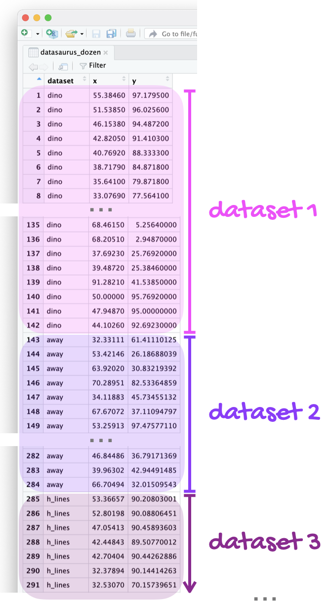

ggplot(penguins, aes(x = bill_length_mm, y = bill_depth_mm)) +
geom_point()Lab 4 - Potpourri
Lab
Introduction
In this lab you’ll review and get practice with a variety of concepts, methods, and tools you’ve encountered thus far.
Part 1 - All about Quarto
Question 1
Add each of strings below to the code chunk provided in your document, render the document, and determine if the string is a proper code chunk label. If not, explain why and describe how you could fix it so the document renders.
- Chunk label 1:
#| label: a-label #| with-a-line-break- Chunk label 2:
#| label: areaaaaaaaaaaaaaaaaaaaaaallllllllllllllllllyyyyylooooooooooooooooooonglabel- Chunk label 3:
#| label: label with spaces- Chunk label 4:
#| label: label-with-dashesTipTry each label option in the code chunk provided in your document. If it gives you an error (document doesn’t render), you know it’s not a proper chunk label.
Which of the chunk label options above is the best option? Explain your reasoning in 1-2 sentences.
Question 2
You have the following code chunk:
Add the following code chunk options, one at a time, and set each to false and then to true. After each value, render your document and observe its effect. Ultimately, choose the values that are the most appropriate for this code chunk. Based on the behaviors you observe, describe what each code chunk option does.
echowarningeval
Question 3
You have the following code chunk again.
ggplot(penguins, aes(x = bill_length_mm, y = bill_depth_mm)) + geom_point()Add
fig-widthandfig-aspas code chunk options. Try settingfig-widthto values between 1 and 10. Try settingfig-aspto values between 0.1 and 1. Re-render the document after each value and observe its effect. Ultimately, choose values that make the plot look visually pleasing in the rendered document. Based on the behavior you observe, describe what each chunk option does.You have the following code chunk, but look carefully, it’s not exactly the same!
gplot(penguins, aes(x = bill_length_mm, y = bill_depth_mm)) + geom_point()Add
erroras a code chunk option and set it tofalseand then set it totrue. After each value, render your document and observe its effect. Ultimately, choose the value that allows you to render your document without altering the code. Based on the behavior you observe, describe what this code chunk option does.
Tip
Reading the documentation might also be hepful.
Render, commit, and push one last time. Make sure that you commit and push all changed documents and your Git pane is completely empty before proceeding.
Part 2 - Misrepresentation
Question 4
The following chart was shared by @GraphCrimes on X/Twitter on September 3, 2022.

- What is misleading about this graph?
- Suppose you wanted to recreate this plot, with improvements to avoid its misleading pitfalls from part (a). You would obviously need the data from the survey in order to be able to do that. How many observations would this data have? How many variables (at least) should it have, and what should those variables be?
- Load the data for this survey from
data/survation.csv. Confirm that the data match the percentages from the visualization. That is, calculate the percentages of public sector, private sector, don’t know for each of the services and check that they match the percentages from the plot.
Question 5
Create an improved version of the visualization. Your improved visualization:
should also be a stacked bar chart with services on the y-axis, presented in the same order as the original plot, and services to create the segments of the plot, and presented in the same order as the original plot
should have the same legend location
should have the same title and caption
does not need to have a bolded title or a gray background
How does the improved visualization look different than the original? Does it send a different message at a first glance?
Tip
Use \n to add a line break to your title. And note that since the title is very long, it might run off the page in your code. That’s ok!
Additionally, the colors used in the plot are gray, #FF3205, and #006697.
Render, commit, and push one last time. Make sure that you commit and push all changed documents and your Git pane is completely empty before proceeding.
Part 3 - DatasauRus
The data frame you will be working with in this part is called datasaurus_dozen and it’s in the datasauRus package. This single data frame contains 13 datasets, designed to show us why data visualization is important and how summary statistics alone can be misleading. The different datasets are marked by the dataset variable, as shown in Figure 1.

Note
If it’s confusing that the data frame is called datasaurus_dozen when it contains 13 datasets, you’re not alone! Have you heard of a baker’s dozen?
Here is a peek at the top 10 rows of the dataset:
datasaurus_dozen# A tibble: 1,846 × 3
dataset x y
<chr> <dbl> <dbl>
1 dino 55.4 97.2
2 dino 51.5 96.0
3 dino 46.2 94.5
4 dino 42.8 91.4
5 dino 40.8 88.3
6 dino 38.7 84.9
7 dino 35.6 79.9
8 dino 33.1 77.6
9 dino 29.0 74.5
10 dino 26.2 71.4
# ℹ 1,836 more rowsQuestion 6
In a single pipeline, calculate the mean of x, mean of y, standard deviation of x, standard deviation of y, and the correlation between x and y for each level of the dataset variable. Then, in 1-2 sentences, comment on how these summary statistics compare across groups (datasets).
Tip
There are 13 groups but tibbles only print out 10 rows by default. Add print(n = 13) as the last step of your pipeline to display all rows.
Question 7
Create a scatterplot of y versus x and color and facet it by dataset. Then, in 1-2 sentences, how these plots compare across groups (datasets). How does your response in this question compare to your response to the previous question and what does this say about using visualizations and summary statistics when getting to know a dataset?
Tip
When you both color and facet by the same variable, you’ll end up with a redundant legend. Turn off the legend by adding show.legend = FALSE to the geom creating the legend.
Render, commit, and push one last time. Make sure that you commit and push all changed documents and your Git pane is completely empty before proceeding.
Grading
The lab is graded out of a total of 28 points.
You can earn up to 4 points on each question:
4: Response shows excellent understanding and addresses all or almost all of the rubric items.
3: Response shows good understanding and addresses most of the rubric items.
2: Response shows understanding and addresses a majority of the rubric items.
1: Response shows effort and misses many of the rubric items.
0: Response does not show sufficient effort or understanding and/or is largely incomplete.